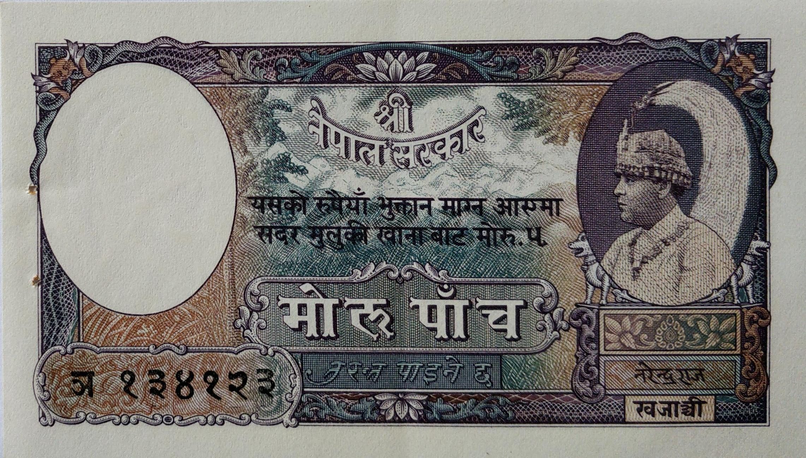
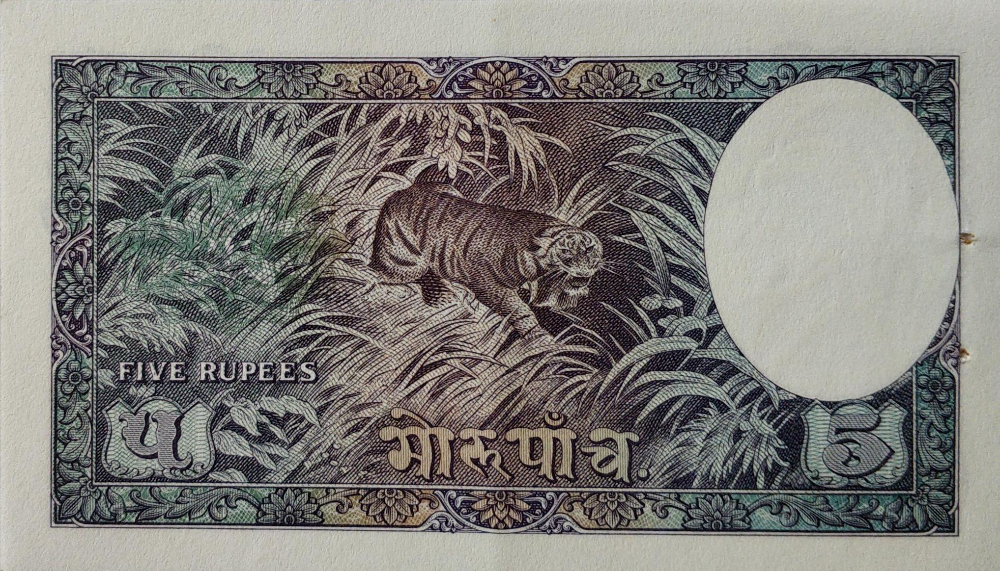
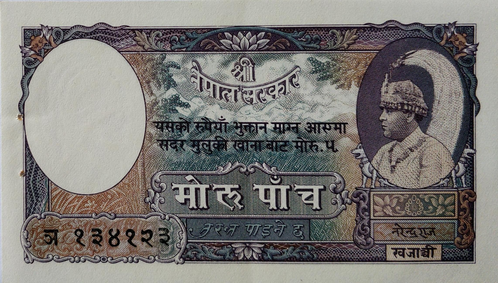
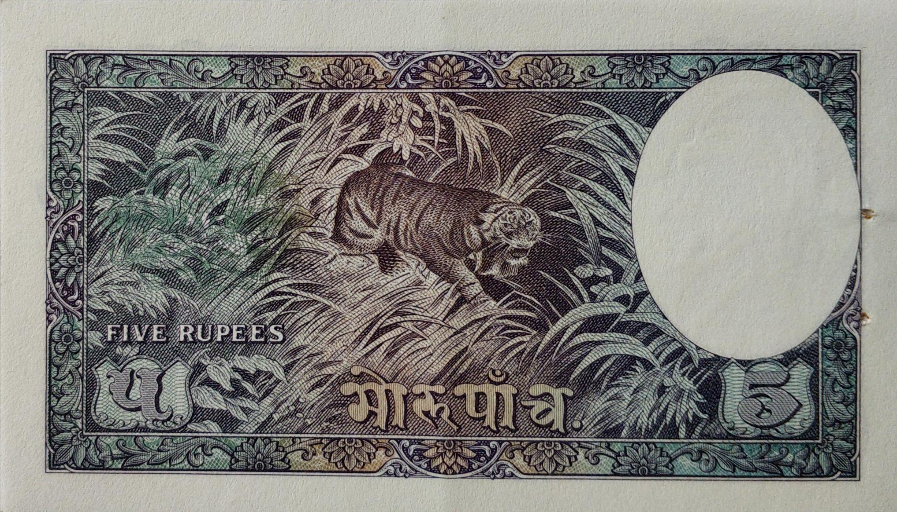
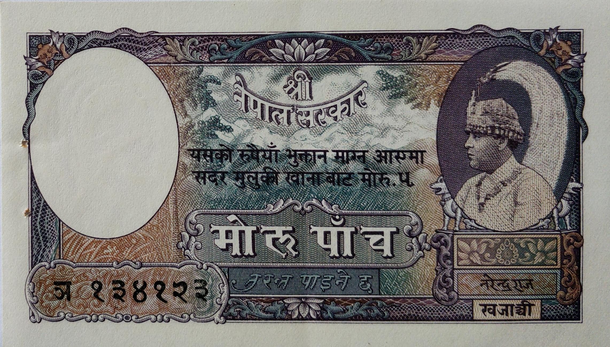
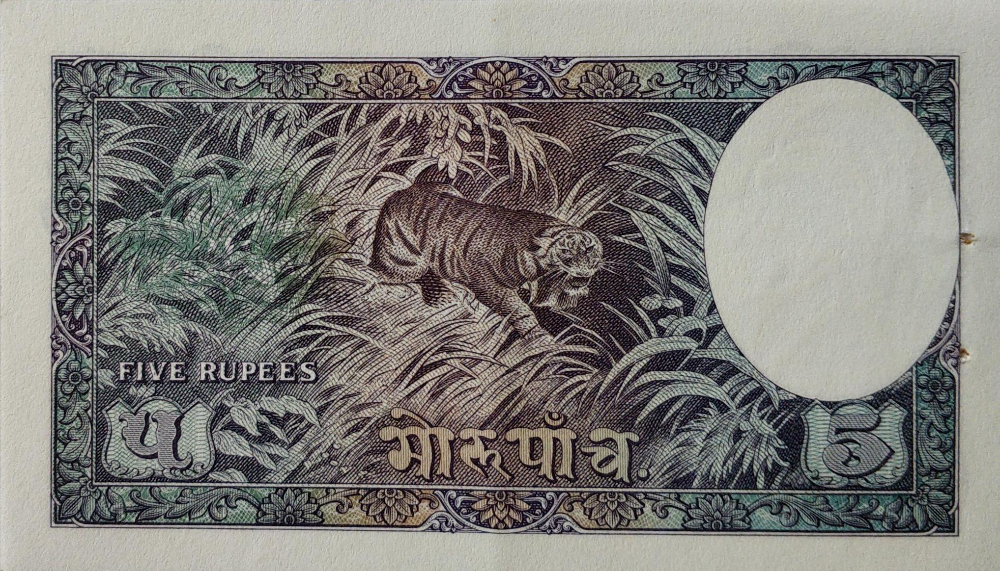
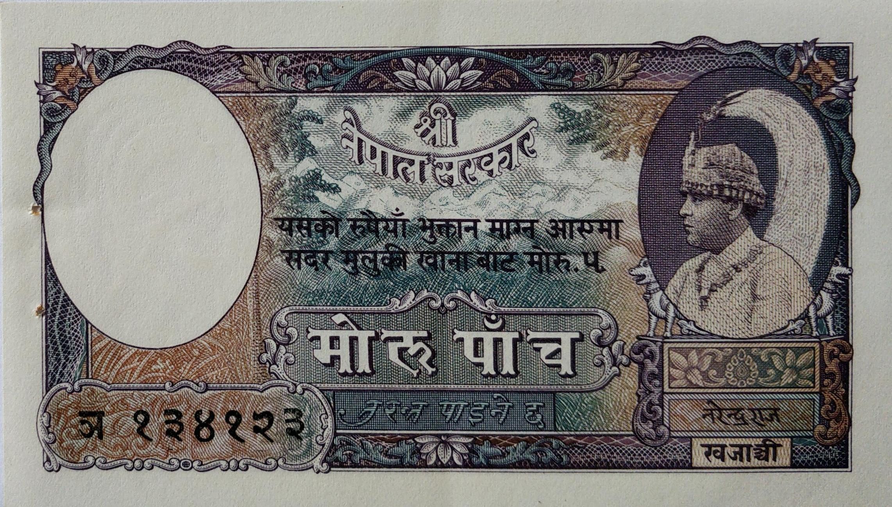
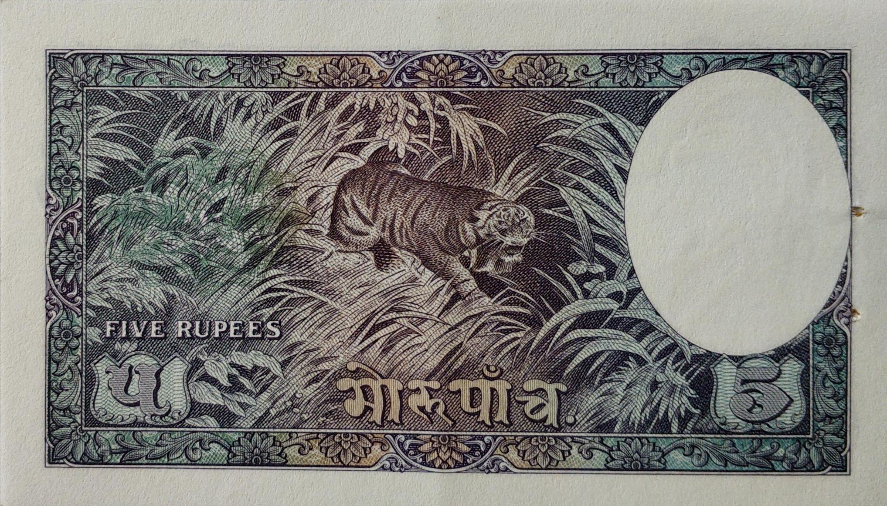

Note of five rupees issued during King Tribhuwan's rule
 







Pandit Narendra Raj Pandey(Jan 22, 1992 to April 25, 1956)
This is the first Nepalese One rupee of Nepal which was issued from 1953 onwards.The watermark in this note is of King Tribhuwan.This money was printed in Nashik,India by Indian Security Press.At that time there didn't used to be Governors, it was signatured by Khajanchee called Pandit Narendra Raj Pandey. It was printed upto 28 million (Prefix:Ka/0 to Ka/27). The size of this note is 65 X 101mm.